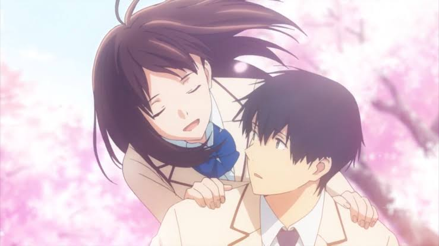
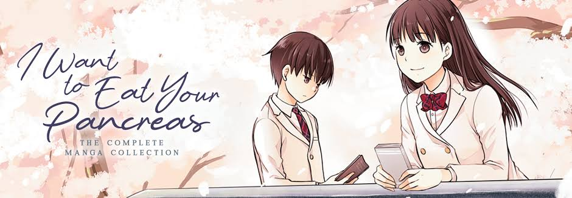
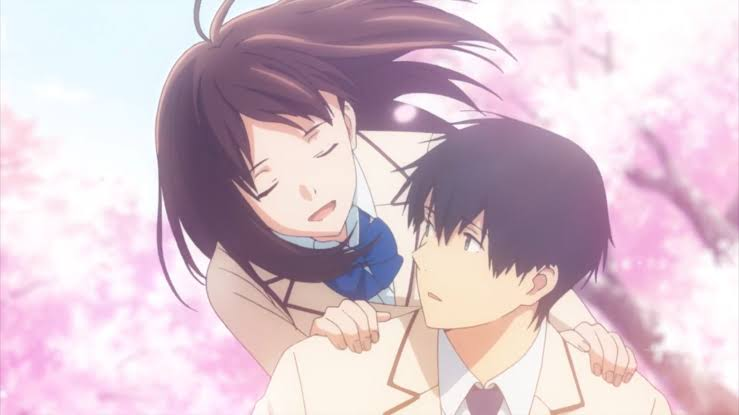
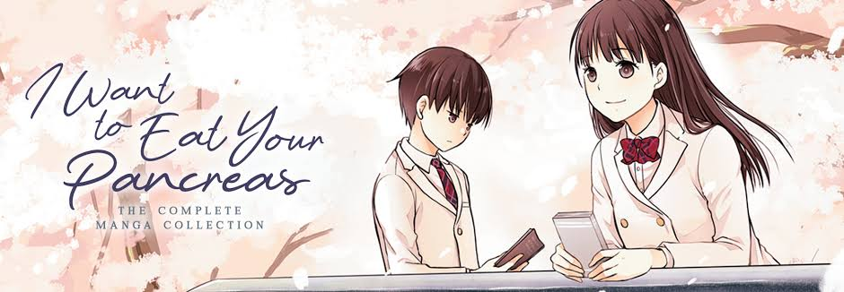
 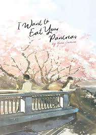
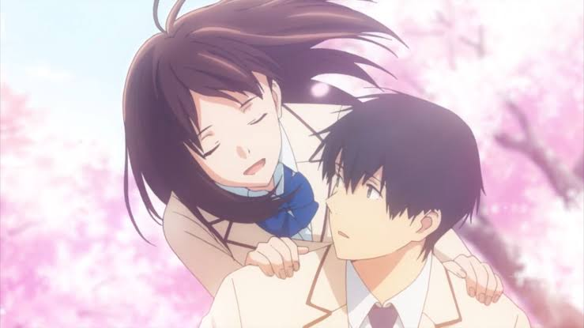
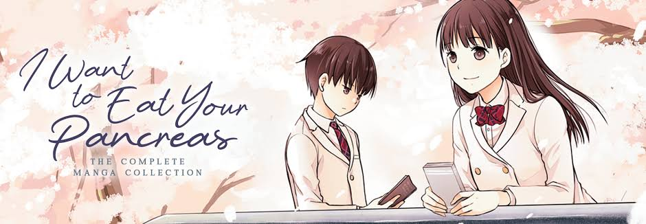
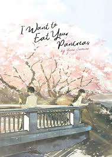
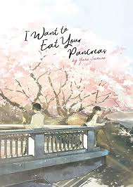
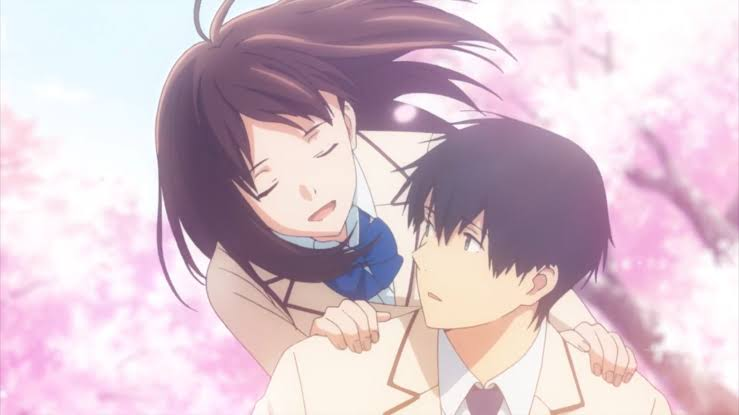
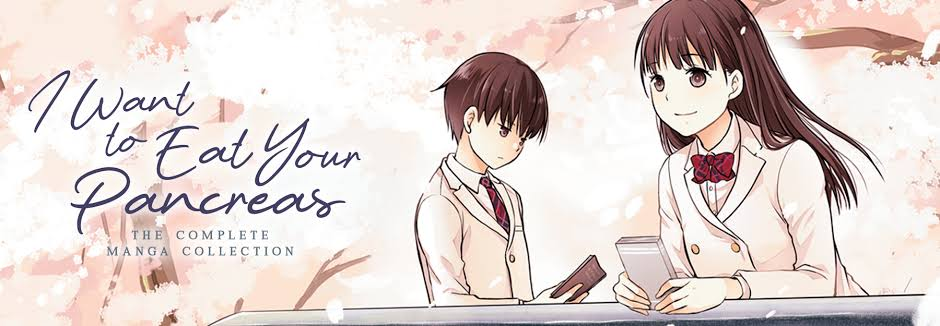
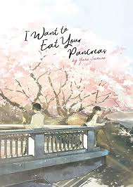
An aloof boy comes across a book in a hospital waiting room. He soon discovers that it is a diary kept by his very popular classmate who reveals to him that she is secretly suffering from a fatal pancreatic illness.I Want to Eat Your Pancreas (Japanese:Hepburn: Kimi no Suizo o Tabetai) is a 2018 Japanese animated coming-of-age drama film based on the light novel of the same name by Yoru Sumino. Produced by Studio VOLN and distributed by Aniplex, the film is written and directed by Shinichiro Ushijima and stars Mahiro Takasugi, Lynn, Yukiyo Fujii, Yuma Uchida, Jun Fukushima, Atsuko Tanaka, Shin-ichiro Miki, and Emi Wakui. In the film, an unnamed male high school student befriends his classmate Sakura Yamauchi, who is revealed to have a terminal illness in her pancreas.
| Name | - Shigha Haruki |
| Age | - 17 |
| Gender | - Male |
| Date of Birth | - January 31 |
Haruki Shigha as addressed in the story of I WANT TO EAT YOUR PANCREAS where he was the first person to discover the SAKURA YAMUCHI's secret.He is the Fuyumi Shigha's father in a sequel novel of the story
Haruki is plain-looking high school student who often wears a listless expression,accordin to his fellow classmates.His hair is jet-black and styled in the way that often occurs when males let their hair grow naturally and not in style
He is often wearing school uniform consisting of a large pale beige blazer with brown details, a white shirt, a blue nectile with black dress pants and dark brown lofars.
| Name | - Sakura Yamauchi |
| Age | - 16 |
| Gender | - Female |
| Date of Birth | - March 10 |
| Status | - Death |
| Occupation | - Student |
| Relatives | - Unmentioned |
Sakura Yamauchi is the deuteragoinst of the I WANT TO EAT YOUR PANCREAS and the only best friend of Haruki Shigha.She is the High School student who is well liked by those who around her due to her positive personality,but she is hiding a big big secret.She has a pancreatic disease and has been told to the Haruki Shigha.
This is one of the ultimate anime movie where we can see real love.Even the the heroine has a pancreatic cancer and she is going to die soon I an days.He saw the heroine after seeing her dairy where she mentioned her props.And the reaction after the heorine death make to cry.